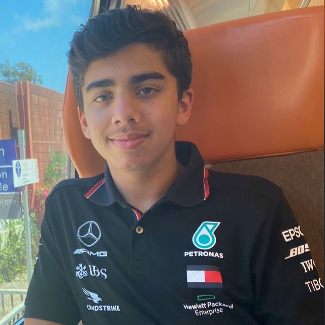

About Us
🌱🚮 New Beginnings in Recycling 🚮🌱
Greetings, fellow eco-conscious individuals! We're excited to introduce you to TheGreenGuide, your brand-new partner in the exciting journey of recycling and sustainability. Our mission? To transform the way you think about waste and empower you to create wonders out of what was once deemed disposable.
✨ Unleashing Creativity for a Greener Tomorrow ✨
At TheGreenGuide, we've found a fresh perspective on recycling—one that blends eco-consciousness with creativity and a touch of humor. Our journey began with the ingenious idea to turn the mundane into the extraordinary. We're talking about those items that often end up in landfills, waiting for their chance to shine. From quirky sculptures to functional art pieces, we believe that every material has a second chance to bring joy.
🎉 Education with a Twist 🎉
Education doesn't have to be boring, right? That's why TheGreenGuide is here to show you the fun side of recycling. Our platform isn't just about the dos and don'ts of waste disposal; it's about igniting your imagination and challenging your creative instincts. We'll guide you on how to make that discarded bottle cap a part of a masterpiece, and that old newspaper a canvas for your artistic expression.
🌈 Workshops and Rune-day 🌈
But that's not all! We're thrilled to announce our upcoming workshops, where you can roll up your sleeves and turn everyday waste into quirky treasures. And mark your calendars for Rune-day—a day dedicated to the positive cycle of recycling. On this day, we invite you to join us in celebrating the joy of creating something cool out of the things we usually toss aside.
📣 Join the Movement 📣
TheGreenGuide isn't just an organization; it's a movement—a movement that believes in the power of your creativity and the potential of recycling. As we embark on this adventure together, we invite you to be a part of our community. Let's redefine waste, laugh in the face of landfills, and celebrate the small but significant steps we take towards a more sustainable future.
So, gear up, recycle, create, and join us on this exciting journey of transformation. TheGreenGuide is here to show you that recycling isn't just about saving the planet; it's about creating a world where every piece of waste has a chance to shine.
Welcome to TheGreenGuide, where recycling meets creativity, humor, and a whole lot of fun!
With eco-friendly excitement,
TheGreenGuide Team 🌿🌟

About the Founder- Ayaan Gazali
"The greatest adventures often start with a simple curiosity, a spark that ignites a journey of a lifetime."
In the quiet hum of my childhood, amidst the world of computers, a spark ignited within me. At the tender age of 11, I embarked on a journey, fingers dancing across keyboards, weaving intricate lines of code that would eventually pave the way for something far beyond my wildest dreams. Little did I know that this journey would lead me to sow the seeds of change, birthing TheGreenGuide—an endeavor as profound as it is compassionate.
As I delved into the realm of programming, languages like HTML, CSS, JavaScript, Python, and C++ became my companions. Each line of code carried the potential to shape the digital world, yet as I gazed beyond screens and lines, a deep longing emerged. A longing to bridge the chasm between technology and the environment, to harmonize the virtual with the visceral, and to craft a legacy that whispers hope to our planet.
The inception of TheGreenGuide wasn't just a decision; it was a calling—an ethereal pull toward a destiny intertwined with sustainability and empathy. Memories of the prestigious Harvard Model United Nations (MUN) conference in Hyderabad served as a backdrop—a place where global perspectives converged, shaping ideals, and lighting the path ahead. In its aftermath, I took up the mantle of Director of PR for the Global Peace MUN, orchestrating harmony across 34 countries through the symphony of diplomacy.
My role as an avid chess player and programmer might seem divergent, but they share a common thread—strategy. The strategic dance across the chessboard mirrors the strategic choreography of coding, where each piece harmonizes to create a greater whole. This same philosophy forms the foundation of TheGreenGuide—a platform where every effort, every line of code, and every workshop crafted resonates with the symphony of change.
Amidst this journey, I wove my own e-commerce website—an ode to entrepreneurship, a testament to the boundless possibilities of code. And yet, the heart of TheGreenGuide beats with a different rhythm—a rhythm that beckons not just transactions, but transformations; not just virtual, but visceral changes in the way we view waste, recycle, and embrace the essence of sustainability.
So, as I stand on the precipice of this newfound endeavor, I am humbled by the path that led me here. TheGreenGuide isn't just a venture; it's a legacy etched in compassion, forged in determination, and ignited by the fervor to create a brighter, greener tomorrow. From the keystrokes of a young programmer to the beating heart of a movement, TheGreenGuide is a tapestry woven with threads of passion, innovation, and the unwavering belief that even in the world of codes, nature holds the most elegant algorithm of all.
Welcome to TheGreenGuide—a journey of code, compassion, and change